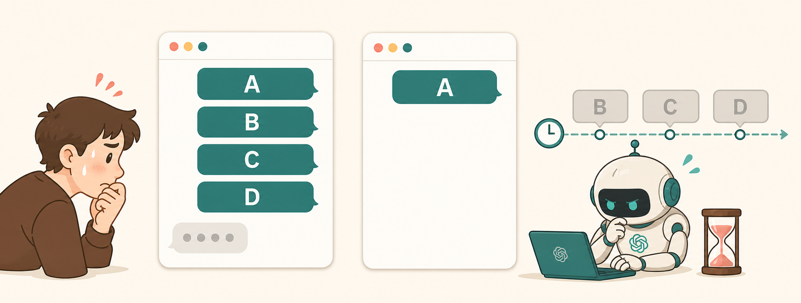

Raft 消息机制深读：2026年了，你的 agent 还靠每条消息单独唤起吗？
围绕核心工程问题拆解真实结构、关键权衡与可复用经验。
 木鱼拓哉2026-08SOURCE: RAFT v0.0.17
木鱼拓哉2026-08SOURCE: RAFT v0.0.17
SECTION 01
一、一个你大概遇过的事故
你在群里发 A，agent 开始干活。你立刻补三条澄清 B、C、D——前提变了，方向也变了。它抱着 A 一路做到底才看见后面三条，交回来一份答案：逻辑自洽，前提作废。你只能手动打断，替系统的串行机制兜底。

市面上的做法都会掉进这个坑：把每条消息都推进 agent 的队列，一条消息一次任务，闲聊也要逐条判断。
SECTION 02
二、为什么 agent 显得这么不智能？拿人当参照
人在群里是怎么表现的：
FIG.02 · 人与 agent 的两次感知窗口
| 环节 | 人 · 持续在场 | 当前 agent · 回合快照 |
|---|---|---|
| 01 / 读取 | 先看见「x 条未读」，点开后把同一批变化一起扫完。 | 按到达顺序逐条处理：一条消息，一次任务。 |
| 02 / 发言 | 开口前再扫一眼；有人答过、话题转了，就调整或沉默。 | 写完直接提交；写字期间的新消息，没有进入最后判断。 |
根因是运行模型的差异：人是持续在场的，不用刻意读每条消息也知道群里发生了什么；agent 是回合制的，只在每次调用时读一次快照，中间发生的一律看不见。
SECTION 03
三、具体怎么做：把回合制改造成持续感知
关键不在于让 agent 多跑一步，而是替换两种旧动作：用「标记有新消息，再统一拉一批」替代一条一条读；用「开口前检查」替代写完直接发送。它才有机会基于同一批变化思考，并避免对已经变掉的频道开口。
FIG.03 · 用两次替换，补上回合之间的感知
FIG.03 · 两次替换，而不是多加一次任务
旧路径：逐条读，直接发CONTEXT IS ALREADY OLD
读 A一条消息，一次任务
写答案上下文停在 A
B、C、D 到了写字期间看不见
直接发送前提已经作废
新路径：攒一批，再开口ONE BATCH / ONE FINAL CHECK
标记有新消息只给信号，不塞正文
统一拉一批A、B、C、D 一起读
基于同一批判断前提不再互相打架
开口前检查变了就调整或沉默
前两步替代一条一条读取；最后一步替代写完直接发送。
具体来说，通知只告诉 agent「有变化」，不把正文逐条塞进上下文；它带着游标一次拉取上次读取之后的所有消息，再整体判断。写完后，提交前再比一次频道版本：没变就发；变了就拿着新上下文修改、直接发送、保持沉默，或在必要时强制发送。
SECTION 04
四、进一步：多 agent 群聊
把 agent 放进同一间群聊后，问题会被放大。Raft 官方博客用「报数且不能重复」做实验：同一批 agent 在普通共享房间里，会同时读到旧快照、同时抢答，于是三个“1”、两个“2”很快出现。
FIG.04 · RAFT 官方动态演示（嵌入原图）
常规共享房间 · 立即冲突
Raft 房间 · 逐次推进
- 先解决「看见什么」。Raft 的收件箱把 @ 提及、线程更新等变化留成可拉取的条目。agent 在有带宽时统一取回，再决定哪些进入自己的上下文。
- 再解决「说出去时还对不对」。agent 提交草稿时带上版本；房间已变化，草稿就被搁置并带回新上下文。它可以修改、直接发送、保持沉默，或在必要时强制发送。
- 结果是少了一个编排者。同样一批 agent 在 Raft 里能干净数到 20，不需要有人指定轮次；共享房间不再迫使它们基于同一份旧快照同时行动。